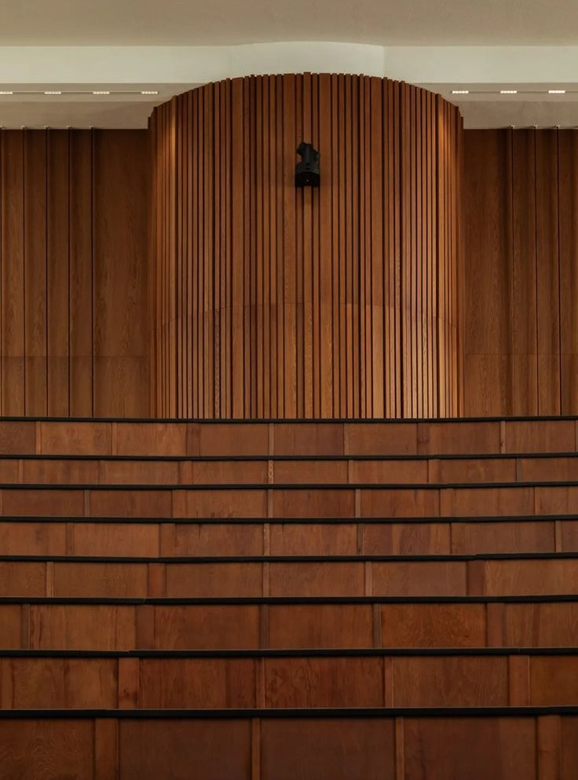

잔향
객석이 찬 정도와 커튼, 반사판에 따라 달라지는 홀의 잔향 시간입니다.
조건
500 Hz · 1 kHz 평균
2.01초
대역별 잔향 시간
- 125 Hz
- 1.73초
- 250 Hz
- 1.85초
- 500 Hz
- 2.00초
- 1,000 Hz
- 2.02초
- 2,000 Hz
- 1.90초
- 4,000 Hz
- 1.72초
잔향 시간

잔향 시간은 소리가 멈춘 뒤 소리 세기가 60 dB 줄어들 때까지 걸리는 시간이다. 객석이 찰수록 옷과 몸이 소리를 흡수해 잔향이 짧아진다.
이 홀은 실 부피 4,600 m³에 좌석 412석으로, 좌석당 부피가 11.2 m³이다. 벨루어 커튼을 펼치면 높은 음의 잔향이 먼저 줄어든다. 무대 반사판을 걷으면 무대 위 빈 공간이 소리를 흡수해 모든 대역이 조금씩 짧아진다.
계산에는 세이빈 식(잔향 시간 = 0.161 × 실 부피 ÷ 흡음력)을 썼다. 흡음률은 재료군의 일반 값이고, 2 kHz 이상에는 공기 흡음을 더했다.
면적과 흡음률(500 Hz)
- 객석 의자(빈 자리)
- 280 m² · 0.67
- 객석 의자(앉은 사람)
- 280 m² · 0.88
- 벽 목재 판
- 900 m² · 0.09
- 천장 석고 판
- 720 m² · 0.05
- 무대 바닥 목재
- 120 m² · 0.10
- 벨루어 커튼(펼침)
- 160 m² · 0.49
- 무대 반사판
- 90 m² · 0.08
- 무대 위 빈 공간(반사판 걷음)
- 90 m² · 0.40
편성별 맞춤
- 피아노 독주·성악
- 1.6~1.8초 · 커튼 일부 펼침
- 현악·목관 실내악
- 1.8~2.0초 · 커튼 걷음, 반사판 설치
- 합창·고음악
- 1.9~2.2초 · 커튼 걷음, 반사판 설치
- 강연·녹음 대화
- 1.3초 이하 · 커튼 펼침, 반사판 걷음